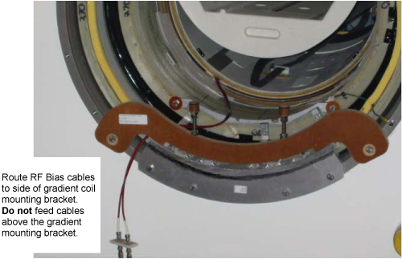

Illustration 13: Inserting RF Bias Cable

| NOTE: | The phenolic bridge support should be installed onto the magnet without the M10 x 110mm all thread studs, jam nuts and phenolic parts. Install the M10 all-thread stud, jam nuts and phenolic parts after the end bell is re-assembled |